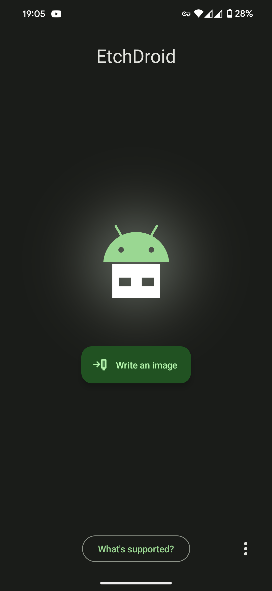
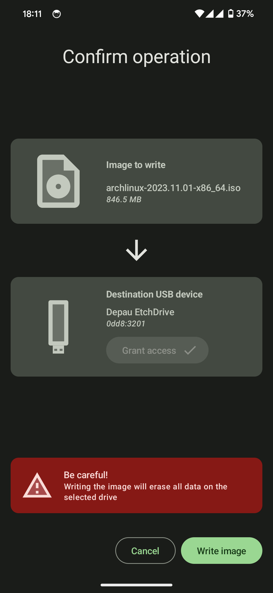

EtchDroid 到底值不值得掏钱？一张手机解决启动盘的时间账
它本身免费开源，但省下来的时间和省掉的麻烦值多少钱？按轻度、主力、重度三档用户拆解 EtchDroid 的真实成本与替代方案。
先抛问题：一个写启动盘的 App，值不值得花钱？
作为一个开源 Android 工具，EtchDroid官网上直接标注着 MIT 协议——完全免费，连官方捐赠渠道都低调得几乎看不见。但"免费"不代表"零成本"，你得为它配 OTG 线、配 U 盘、甚至可能要换一台支持 USB Host 的手机。反过来，不用它的话你得背笔记本出门，或者在酒店 WiFi 里等半小时 ISO 下载。这篇账我算过三遍，结论挺有意思。

定价拆解：免费版给什么，付费版多什么
EtchDroid 只有一个版本，没有 Pro、没有订阅、没有一次性买断——这点得先讲清楚，免得有人搜半天"EtchDroid Pro"。直接从官方下载就能拿到安装包，F-Droid 仓库也有同步更新。
它能做的事情就三件：选一个 ISO 镜像、选一个 USB 设备、一键写入。支持的镜像格式包括 ISO、IMG、DMG、RAW——基本上你能找到的 Linux Live 系统、树莓派镜像、Windows PE 都能吃。写入前会自动卸载分区、写入后会做校验、整块写入完了还能提示你安全拔出。没有广告、没有弹窗、没有"升级解锁高级功能"。
你为它花的钱，本质上是外围硬件的钱，不是软件本身的钱：
| 外围 | 预算 | 说明 |
|---|---|---|
| 无源 OTG 转接头 | 5-15 元 | USB-C to USB-A 母头，几块钱的就能用，但别买号称"OTG + 充电二合一"的杂牌 |
| U 盘 8GB+ | 30-80 元 | 建议 16GB 起步，USB 3.0 口写入速度快。选金士顿、闪迪、三星这种传统品牌稳 |
| 有源 USB 集线器 | 40-80 元 | 只有接移动硬盘或大功耗设备才需要，绝大多数场景不用买 |
| 支持 OTG 的安卓手机 | 已持有或 500+ 元二手 | 主力机不支持的话，备用机市场随便挑一台就行 |
加起来 35-95 元就能凑齐基础套装，二手备用机另算。
算账：分三档人算
轻度用户：一年写一两次启动盘
典型场景：偶尔帮朋友装系统、偶尔试个新发行版、半年才刷一次树莓派。
免费版够不够？够，而且绰绰有余。 你一年用一两次，写一个 ISO 花 5-10 分钟，省下的是"为了写个启动盘专门把笔记本塞进背包"的麻烦。这 5-10 分钟按你出门取电脑再开机的时间算，顶多值 3-5 块钱——完全覆盖 OTG 线加 U 盘的日均成本。
替代方案的代价：继续用笔记本写盘。写一次启动盘需要开机、下载 ISO、插 U 盘、跑 Rufus 或 Etcher，全程 15-25 分钟。省下来的 EtchDroid 时间就是 10-15 分钟，折算每使用一次省 2-3 块钱。
主力用户：每月写三四次
典型场景：开源爱好者、IT 运维、经常参加技术分享或黑客松的人。现场救场是高频需求——演示机突然启动不了，台下几十人等着你的 Demo，这时候 EtchDroid 不是便利，是刚需。
免费版够不够？够，但你需要更好的硬件。 主力用户的痛点不在软件本身，而在写入稳定性。写着写着 U 盘掉线、手机 USB 口供电不足导致写入中断、杂牌桥接芯片和 libaums 不兼容——这些坑主力用户大概率会踩一次。遇到排查问题时去EtchDroid文档翻一下，上面的 OTG 兼容表和 USB 不识别排查清单挺实用。解决方法不是换软件，是换一根靠谱的 OTG 线和一个更稳的 U 盘。把预算提到 100-200 元换一套品质好的，写入中途掉线的概率能从 20% 降到 2% 以下。
每单位时间成本：假设每月用 4 次、每次省 10 分钟，一年就是 480 分钟 = 8 小时。一个能在现场 5 分钟内出启动盘而不是等 20 分钟的人，这 15 分钟的差距可能就是 Demo 能不能正常跑起来的差距。按时间折算，8 小时价值多少钱取决于你的时薪，但至少 OTG 线和 U 盘的成本在三个月内就能回本。

重度用户：每周写盘，多设备并行
典型场景：给机房批量装机、在公司做系统巡检和重装、同时管好几块树莓派和迷你主机。
免费版够不够？软件本身够，但硬件要升级。 重度用户会遇到两个轻度和主力都碰不到的瓶颈：一是手机 OTG 口的供电能力——连续写多个大文件后手机主板发热，某些 ROM 会主动降频保护，写入速度从 15MB/s 掉到 5MB/s；二是需要更可靠的写入结果——批量装机写错了一张盘可能就是一整个工位的系统重装时间。
成本结构变了：重度用户需要一台专门的安卓备用机（二手 1000-2000 元档选支持 OTG Host 且电池容量大的）、一个有源 USB 集线器（给多个设备同时供电）、以及至少两块 U 盘轮换。这套"专业套装"投入大约 1500-2500 元，但换来的是你不用再专门扛一台笔记本出去——这一点的价值对重度用户来说是压倒性的。
每单位时间成本：每周写盘 3-5 次，每次省 15-20 分钟，一年省下来的时间足够把一次系统巡检的工时都赚回来。更关键的是，你不用再在网吧、酒店、咖啡馆的弱网环境里等 ISO 下载——ISO 提前存在手机里，现场插上就能写，这在重度场景下是质的区别。
替代方案：不花这笔钱有什么别的路
说穿了，EtchDroid 替代的不是"花钱买软件"，而是"花钱买笔记本便携性"和"花时间等下载"。
方案 A：继续用笔记本写盘
这是最传统的方案。优点是笔记本的 USB 口供电充足、兼容性好、写入速度上限高。缺点是你得随时背着笔记本——不管是出差、参加活动、上门修机器，笔记本都得在包里占一个大格。如果你本来就天天带笔记本，那 EtchDroid 对你来说是锦上添花，不是必须。但如果你日常只带手机出门，EtchDroid 省下来的那个笔记本包的空间，本身就值回票价了。
方案 B：用笔记本 + Etcher / Rufus
EtchDroid 和 Etcher、Rufus 在功能上是完全等价的——都是把 ISO 写入 U 盘。区别只在运行环境：EtchDroid 在手机上跑，Etcher/Rufus 在笔记本上跑。Etcher 也是免费开源的，Rufus 有付费版但免费版完全够用。这俩不是替代 EtchDroid 的方案，是和 EtchDroid 互补的方案——你有笔记本的时候用 Etcher，只有手机的时候用 EtchDroid，它们之间不存在谁替代谁的问题。
方案 C：花钱买个专门的便携写盘设备
市面上有一些独立的 USB 复制器、磁盘克隆设备，价格从几百到几万不等。但对你的场景来说完全没必要——EtchDroid 加一台安卓手机，就是你随身的便携写盘设备，成本几十到几百，功能覆盖 95% 的日常需求。
结论：哪类人闭眼上、哪类人再等等、哪类人永远不用
闭眼上的人：IT 运维、开源社区活跃分子、经常需要在外场写启动盘的人。你每周至少一次在"我只有手机但需要写盘"的场景里——EtchDroid 不是锦上添花，是把"不可能完成的任务"变成"5 分钟搞定"的工具。硬件套装花个百八十块，一年之内省下的时间和避免的尴尬，值回十倍。
再等等的人：偶尔帮朋友写个启动盘、半年才碰一次 Linux Live ISO。EtchDroid 对你来说有用但不急——可以等下次 OTG 线打折、或者顺便在网购的时候把 U 盘一起下单，凑齐一套再装。反正软件本身免费，随时可以装。
永远不用的人：天天背着笔记本、只用笔记本写盘、从来没有过"只有手机在场"的场景。EtchDroid 对你来说确实是多余的——你有笔记本就直接用 Etcher 或 Rufus，功能一样，环境更稳定。省下的钱不如买个好点的 U 盘。
最后说句实在话
EtchDroid 这种工具最容易被低估——它不像 Photoshop 或 Notion 那样有明确的付费订阅，也不像手机厂商那样每年开新品发布会。你装了它可能半年才用一次，但真正用到的时候，它能让你在酒店 WiFi 挤爆、台下观众等着、你手机电量还剩 20% 的时候，冷静地 5 分钟出一张启动盘。
这种"关键时刻不掉链子"的价值，怎么折算都不过分。
国内网络经常抽风，这套资料我在三个仓库都备份了——GitHub 是原版，Gitee 和 GitCode 是镜像，哪个连得上就看你当时的网速。